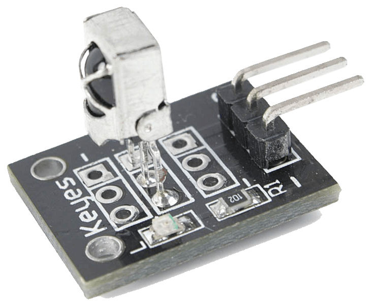
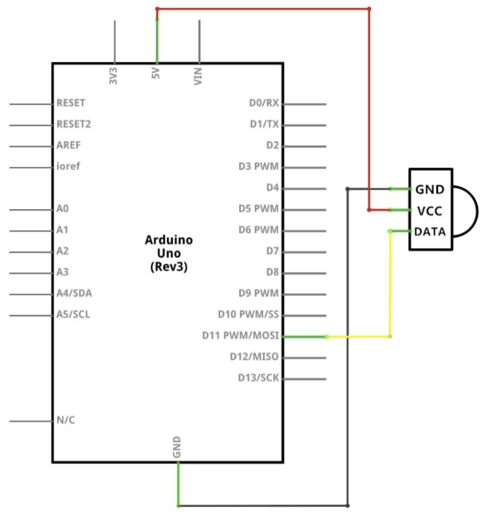
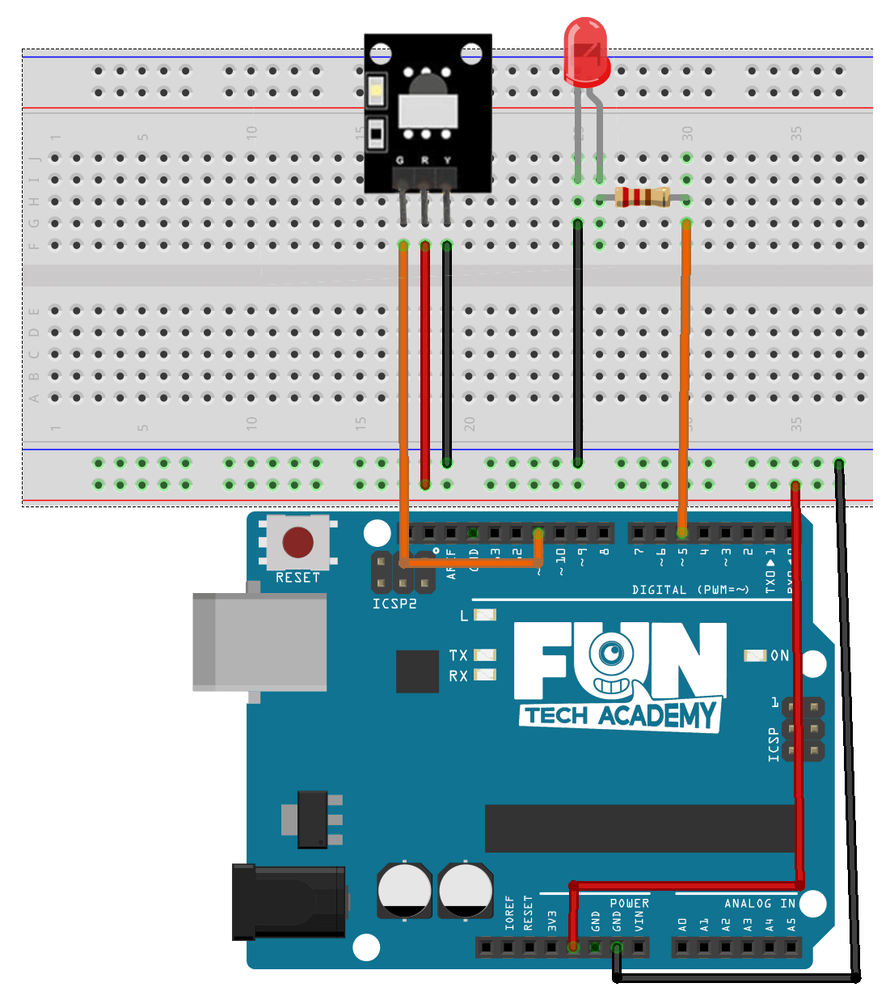
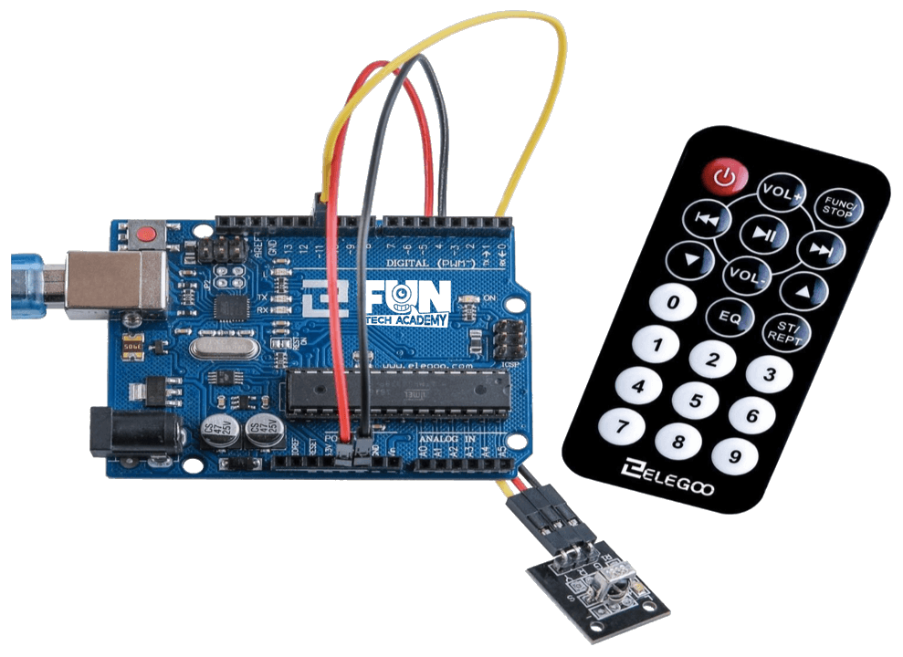

En este tema usaremos un módulo sensor infrarrojo para recibir la señal de controles remotos IR (infrarrojos)
que usan muchos de los equipos domésticos como televisiones, equipos de sonido, etc.
Usando un control remoto es una forma de tener el control inalámbrico de nuestro proyecto.
A través de estos módulos controlaremos las salidas de nuestro Arduino.
(1) x Placa Arduino
(1) x Módulo receptor IR
(1) x Control remoto IR
(1) x LED rojo de 5mm
(1) x Resistencia de 220 ohm
(3) x F M cables (cables de hembra a macho)
Los detectores de infrarrojos son pequeños microchips con una fotocélula que están sintonizados para escuchar la luz infrarroja.

Casi siempre se utilizan para la detección por control remoto: todos los televisores y reproductores de DVD
tienen uno de estos en la parte frontal para escuchar la señal de infrarrojos del mando a distancia. Dentro
del control remoto hay un LED de infrarrojos a juego, que emite pulsos de infrarrojos para indicarle al
televisor que se encienda, apague o cambie de canal.
La luz infrarroja no es visible para el ojo humano, lo que significa que se necesita un poco más de trabajo
para probar una configuración.
Este sensor tiene un filtro interno para detectar solo frecuencias infrarrojas cercanas a 38KHz, lo que lo
hace compatible con la mayoría de mandos infrarrojos.
Posee 3 pines de conexión GND, VCC y DATA, el cual nos permite conectar directamente a un pin digital de
nuestro Arduino o cualquier microcontrolador que deseemos usar.
Como mando usaremos el que viene junto al sensor en el kit del mando infrarrojo.

Este mando usa el protocolo NEC que trabaja a 38KHz de frecuencia, el formato del tren de pulsos que envía al presionar una tecla se muestra en la siguiente gráfica:
Lo particular de este protocolo es que envía doble vez tanto la dirección como el comando, de forma normal y
negado, con esto posteriormente se puede validar los datos.
La dirección está asociada a un dispositivo, por ejemplo un TV, una equipo de sonido, un VCR, etc. Y el
comando está asociado a la acción o función del botón. Por ejemplo subir el volumen, apagar, el número 1 o 2,
etc.
Para este tema vamos a trabajar como si se tratase de un solo bloque de datos 32 bits.
A continuación se muestran los valores de los datos correspondientes a los botones del control remoto usado:
Como se observa el dato está formado por la dirección, comando y sus negaciones, por ejemplo para la tecla OK: el dato de 32bits es 0x00FF02FD, donde la dirección es 00 y su negación FF, y el comando o función es 02 y su negación FD.



Haremos uso de una biblioteca diseñada para estos módulos que hará nuestro código corto y sencillo.
IRremote es una de las librerías más usadas y completas para trabajar con protocolos de controles
infrarrojos. Tiene implementado varios protocolos de las marcas más conocidas como Sony, LG, Samsung, etc.
Es necesario descargar e importarla a nuestro IDE Arduino para poder trabajar con este módulo.
Incluimos la biblioteca al principio de nuestro código, y luego mediante simples comandos podemos controlar
el comportamiento del módulo. El archivo lo descargaremos de
aquí. Tendremos que
descomprimir los archivos antes de incluirlos.
Una vez efectuado todo el cableado, descargaremos el script del siguiente
enlace y lo cargaremos como hemos
aprendido.
En el ejemplo, se encenderá y apagará el led del pin 13 con cualquier tecla de nuestro control remoto,
incluso con cualquier otro mando a distancia.
Con IRrecv irrecv(pin_receptor) creamos la variable u objeto para el receptor IR, en el pin especificado, luego creamos la variable resultados, que es una estructura en donde se guardaran todos los datos relacionados cuando se recibe un dato por el sensor.
int pin_receptor = 11;
int pin_led = 13;
IRrecv irrecv(pin_receptor);
decode_results resultados;
En Setup() inicializamos la recepción de datos con irrecv.enableIRIn() y configuramos el pin 13 como salida.
irrecv.enableIRIn();
pinMode(pin_led, OUTPUT);
En loop() simplemente comprobamos si le llega un dato al receptor, esto lo hacemos con
if(irrecv.decode(&resultados)), si hay un dato, encendemos y apagamos el LED.
Posteriormente, reseteamos el receptor para poder recibir la siguiente señal
if (irrecv.decode(&resultados))
{
digitalWrite(pin_led, HIGH);
delay(300);
digitalWrite(pin_led, LOW);
irrecv.resume();
}
Después de cargar el programa, al presionar cualquier tecla de cualquier control remoto, deberá encender el LED.
Ahora vamos a evaluar cada uno de los botones que pulsamos.
Tenemos que enviar al puerto serie los datos correspondientes a la tecla presionada.
Para este reto, crearemos una función para extraer toda la información que nos da la estructura de datos que recibe nuestro receptor IR. Podemos llamarla:
void traducirIR()
Primero mostraremos el tipo de señal. Este dato nos indica el número de bits que utiliza la señal y lo mostraremos como un número decimal. Lo extraemos del valor de la estructura:
Serial.print(resultados.bits, DEC);
A continuación mostraremos el tipo de mando a distancia. Este dato lo extraemos del valor de la estructura:
resultados.decode_type
Después mostraremos el valor del botón pulsado y lo haremos tanto en hecadecimal como en binario. Este dato lo extraemos del valor de la estructura:
Serial.print(resultados.value, HEX);
Serial.print(resultados.value, BIN);
Lo mostraremos todo de tal manera que en una única línea nos indique todos los valores con un texto que identifique cada valor.
Ahora que ya sabemos el valor del dato que corresponde a cada uno de los botones de nuestro mando (el de Arduino o el de la tele), vamos a asociar los 4 botones numéricos del 1 al 4 a 4 pines digitales y encender o apagar leds, que se podrían remplazar por ejemplo con cada uno de los canales de la tele.

Para este reto, aprovecharemos el reto anterior para ver el valor de cada una de los botones de nuestro mando de arduino y mostraremos en el terminal de serie cada uno de los botones pulsados. Esto lo haremos de la siguiente forma:
switch(resultados.value)
{
case 0x00FF629D:
Serial.println("Tecla: Arriba");
break;
}
Además, cuando pulsemos los números del 1 al 4, encenderemos el pin correspondiente al LED.
Esta vez, lo haremos de una forma distinta. Si lo pulsamos una vez, lo encenderemos y si lo volvemnos a
pulsar, lo apagaremos. En lugar de evaluar primero si está encendido o no, lo haremos directamente haciendo
lo contrario de la situación en la que se encuentre. Esto lo haremos de la siguiente forma:
digitalWrite(pin_led1, !digitalRead(pin_led1));